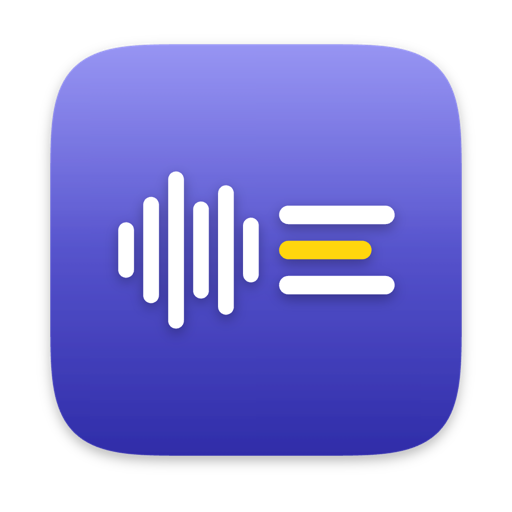
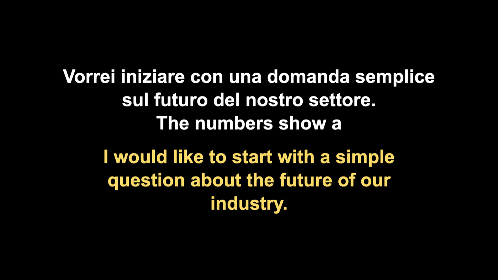
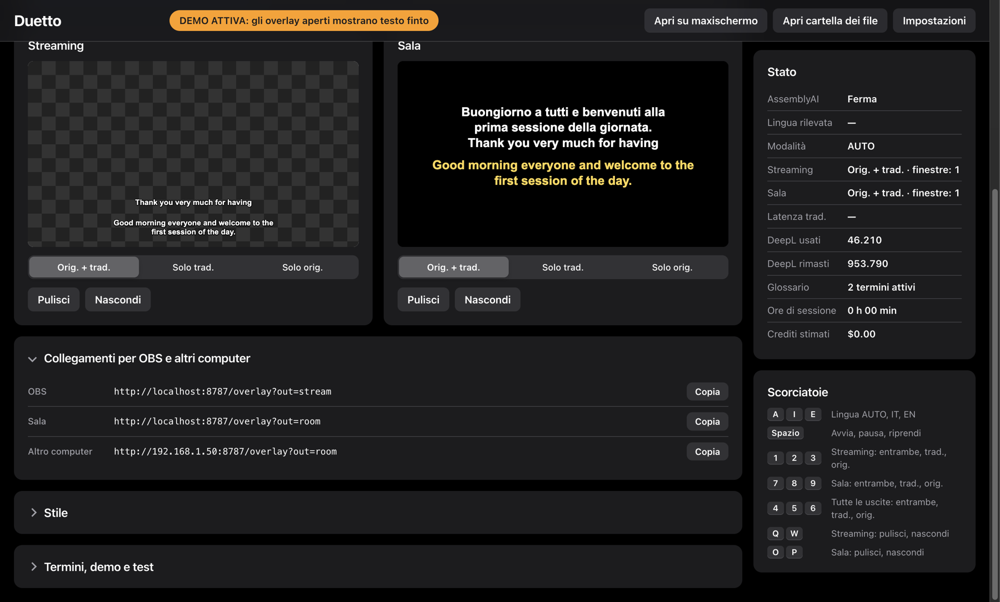
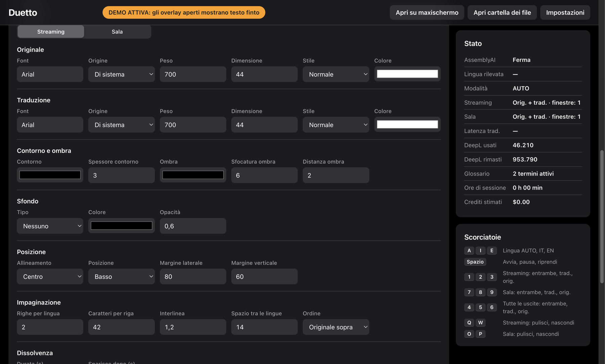
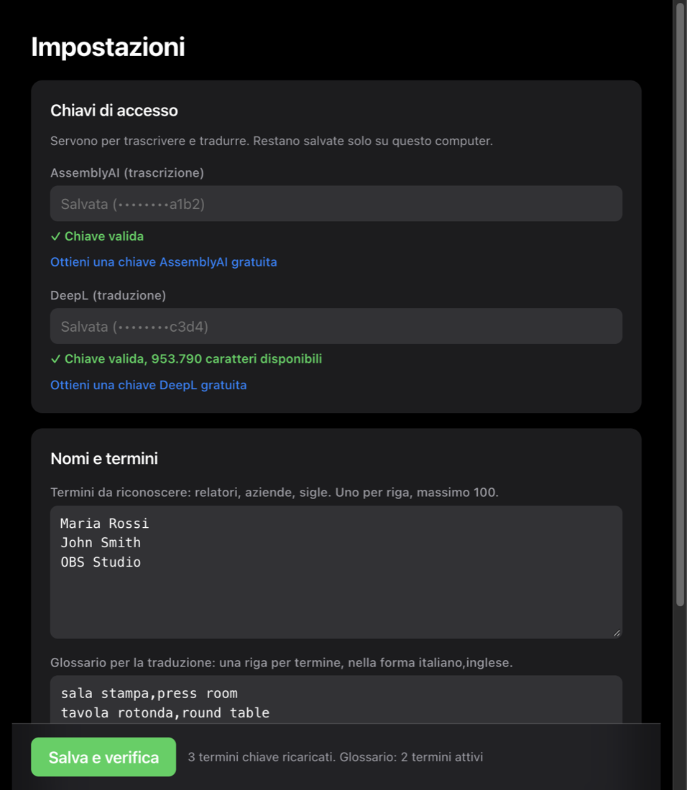

Audio preso dal sistema
Non dipende più dalla finestra della regia, anche quando è nascosta. Con un'interfaccia a molti ingressi usa i primi due, e solo quelli con segnale.

Nuova versione 2.0Tante lingue. Due schermi.
Una regia.
Sottotitoli in diretta per eventi, conferenze e dirette streaming. Duetto ascolta chi parla, scrive quello che dice e lo traduce, frase per frase, nelle lingue che hai scelto: sulla diretta e sul maxischermo in sala.

Niente stenotipisti.
Niente cabina per gli interpreti.
Un portatile e il segnale del mixer.
Capisce da solo che lingua stai parlando, anche se cambi a metà serata.
Buonasera a tutti e grazie di essere qui stasera.
Good evening everyone, and thank you for being here tonight.
Un esempio di come appare sul maxischermo. Il testo originale è sopra, la traduzione sotto in un altro colore.
Stesse funzioni e stesse pagine, in un'app circa 20-30 volte più leggera da scaricare. Usa il motore web che hai già nel sistema, invece di portarsene dietro uno.
Non dipende più dalla finestra della regia, anche quando è nascosta. Con un'interfaccia a molti ingressi usa i primi due, e solo quelli con segnale.
Segue il microfono scelto nel sistema. E se il permesso manca o l'ingresso sparisce, te lo dice chiaramente.
I sottotitoli si vedono solo sul computer che usa Duetto. L'accesso dalla rete lo apri tu, dalle Impostazioni.
Gli altri siti aperti sul computer non possono comandare la regia. La correzione è arrivata con la 1.2.3.
Se vuoi, compare la scritta che i sottotitoli sono generati automaticamente, nella lingua dell'uscita o con un testo tuo. Non finisce nei CC di OBS.
Licenze in ogni pacchetto, elenco dei componenti (SBOM) e codici SHA-256 per controllare il download.
In prova Dove vedi questa etichetta, la funzione c'è ma l'ho provata solo con servizi simulati. Tutte le versioni
Per ogni evento scegli fino a 6 lingue parlate e fino a 8 lingue di traduzione. In AUTO Duetto riconosce la lingua frase per frase, ma solo tra quelle che hai scelto: così sbaglia meno.
Accanto ad AUTO c'è un pulsante per ogni lingua dell'evento. L passa alla successiva, A torna ad AUTO.
L'arabo sugli schermi si legge nel verso giusto.
DeepL traduce solo le lingue che sono davvero su uno schermo, così i costi restano bassi.
Tre passaggi, e il terzo lo fa da solo.
Prendi un'uscita dal mixer, o anche solo un microfono, e la mandi al computer su cui gira Duetto.
Duetto ascolta, trascrive in un paio di secondi e traduce ogni frase nelle lingue che hai scelto.
Sopra la diretta in OBS e sul maxischermo in sala, ognuno con il suo stile e la sua lingua.
Chi guarda da casa e chi è in sala non hanno bisogno della stessa cosa, e magari neanche della stessa lingua. Per questo le uscite sono due, ognuna con stile, comandi e lingua suoi.



Se chi parla usa già la lingua di uno schermo, quello schermo passa a un'altra lingua tra quelle scelte. Con italiano e inglese funziona come sempre: l'italiano diventa inglese e l'inglese diventa italiano.
Le uscite sono semplici indirizzi web: li copi con un clic e li apri in OBS. Per usarli da un altro computer della stessa rete, prima lo permetti nelle Impostazioni.
Oltre alla grafica sopra il video, Duetto può mandare i sottotitoli direttamente a OBS Studio, che li inserisce nello streaming come sottotitoli nativi. Su YouTube e Twitch chi guarda li accende e li spegne con il tasto CC, come in un video qualsiasi.
L'ho pensato per le serate vere: ore di diretta, relatori che cambiano lingua, la rete che salta nel momento sbagliato.
Riconosce la lingua frase per frase, anche se chi parla cambia senza avvisare.
Una trasparente per OBS e una ad alto contrasto per il maxischermo, ognuna con stile, comandi e lingua suoi.
Caratteri, dimensioni, colori, contorno, sfondo e posizione, separati per originale e traduzione. E li salvi come preset.
Se cade la rete si ricollega da solo senza perdere parole. Il pubblico non vede mai un errore.
Un SRT per ogni lingua andata in onda, tipo spagnolo.srt accanto a originale.srt, e la trascrizione con tutte le traduzioni. Se non vuoi salvare niente, lo spegni.
Gli insegni i nomi dei relatori e le sigle, e decidi tu come tradurre i termini che contano.
Font, peso, colore, ombra, righe per lingua, caratteri per riga, dissolvenza. Prova le modifiche in modalità demo, con un testo finto, prima di andare in onda.

Ogni comando ha il suo tasto. Non devi cercare il pulsante giusto mentre il relatore sta già parlando.
Duetto usa AssemblyAI per trascrivere e DeepL per tradurre. Ti registri su tutti e due, copi la chiave e la incolli nelle impostazioni. Fine.

Il codice è pubblico: puoi leggerlo, provarlo e modificarlo. Dalla versione 1.2 chi lo usa per guadagnarci contribuisce a tenerlo in vita.
Progetti personali, studio, scuole, associazioni senza scopo di lucro ed enti pubblici. Scarichi e usi.
Scarica DuettoPorto Duetto al tuo evento e lo seguo io dalla regia, dall'allestimento ai file dei sottotitoli a fine giornata.
ParliamoneAgenzie, service audio-video e aziende che vogliono usare Duetto per i propri eventi. Una licenza su misura.
Chiedi una licenzaLo usi gratis e ti è stato utile? Un caffè mi aiuta a portarlo avanti.
Su Mac con macOS 14 o successivo e su PC Windows a 64 bit. I pacchetti per Windows e Mac Intel non li ho ancora provati con un'interfaccia audio vera. L'interfaccia è in italiano o in inglese: segue la lingua del computer, oppure la scegli tu.
No. La trascrizione e la traduzione girano sui server di AssemblyAI e DeepL, quindi serve una connessione. Se salta per qualche secondo, Duetto si ricollega da solo e recupera le parole.
Duetto è gratis per uso non commerciale. Paghi solo i due servizi, quando finisce il credito gratuito: più o meno uno o due euro per ogni ora di parlato.
Riconosce 19 lingue parlate e traduce in 30. Per ogni evento ne scegli fino a 6 parlate e fino a 8 di traduzione. Italiano e inglese sono pronti da subito; le altre le ho provate solo con servizi simulati.
Sì: c'è un'opzione che fa elaborare l'audio ad AssemblyAI solo sui server europei. È nuova, quindi prima di un evento importante fai una prova.
Sono automatici e possono contenere errori: non usarli come unico riferimento dove uno sbaglio può fare danni. Puoi mostrare al pubblico un avviso che sono generati con l'AI.
Lingue, stili, preset, termini chiave e glossario restano. Devi rimettere le chiavi API e la password di OBS, e scegliere di nuovo l'ingresso audio e il permesso del microfono.
No. All'avvio ti avvisa se su GitHub c'è una versione nuova e ti dà il link, ma installi tu quando vuoi. L'avviso si può anche spegnere.
Sì, con una licenza commerciale, oppure lo porto io come servizio. Scrivimi e troviamo la formula giusta.
Certo. È scritto in Rust con Tauri, con le pagine in HTML e JavaScript. Servono Rust e, per i test,
Node.js 20 o successivo: npm install e poi npm run app.
Con npm test giri i test con servizi finti, senza rete né credito.
Il codice è su GitHub.
Licenza PolyForm Noncommercial 1.0.0. Le versioni fino alla 1.1.0 restano con licenza MIT. AssemblyAI e DeepL sono servizi di terze parti, con i loro termini e i loro costi.